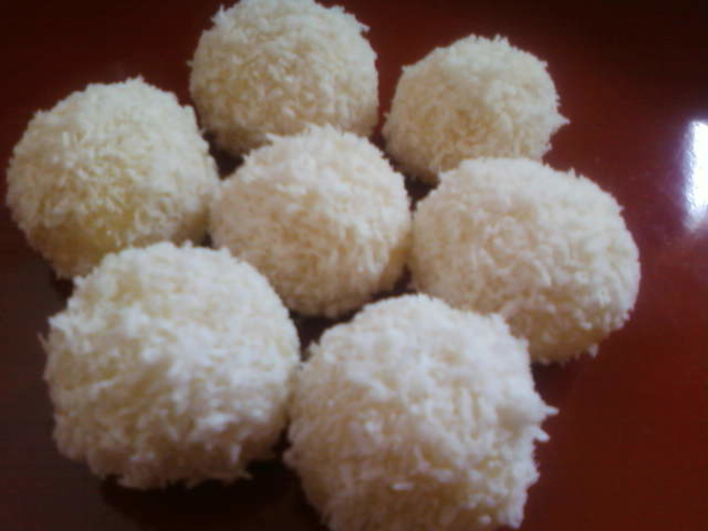

Snowballs

Description
Snowball cookies are technically called Mexican wedding cakes or Russian teacakes, but my grandmother gave up on us calling them that years ago! With a rich, nutty flavor from finely chopped pecans, and a sweet, powdery coating from confectioners' sugar, these tiny, buttery treats are truly the most delicious melt-in-your-mouth morsels.
Ingredients
- 1 cup unsalted butter, softened
- 1/2 cup powdered sugar
- 1 teaspoon vanilla extract
- 2 and 1/4 cups all purpose flour
- 1 cup very finely chopped peacans
- 1/4 teaspoon salt
- 1/3 cup powdered sugar or more as needed
Steps
- Beat the butter,powdered sugar, and vanilla
- Mix in the flour,pecans, and salt
- Shape into balls and bake until set
- Roll the warm cookies in powdered sugar
- Let the cookies cool, then roll them in sugar again.